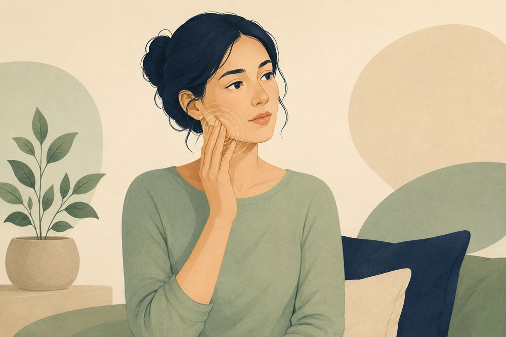

관절이 아픈 경우
입을 벌리거나 씹을 때 귀 앞의 한 점이 콕콕 아픕니다. 소리(딸깍, 사각사각)가 함께 나기도 하고, 아픈 쪽으로 씹기가 꺼려집니다.
 MEAW턱관절 연구회
가까운 회원 치과
MEAW턱관절 연구회
가까운 회원 치과
턱 통증은 크게 두 갈래입니다. 관절이 아픈 경우와 근육이 아픈 경우입니다. 손가락으로 아픈 자리를 짚어 보면 어느 쪽에 가까운지 가늠할 수 있습니다.
물론 두 가지가 섞여 있는 분도 많습니다. 그래서 진료에서는 관절과 근육을 각각 따로 확인합니다.

입을 벌리거나 씹을 때 귀 앞의 한 점이 콕콕 아픕니다. 소리(딸깍, 사각사각)가 함께 나기도 하고, 아픈 쪽으로 씹기가 꺼려집니다.
볼이나 관자놀이가 넓게 뻐근합니다. 오래 씹으면 턱이 피로하고, 아침에 더 묵직하기도 합니다. 두통처럼 느껴지는 날도 있습니다.
관절 통증은 관절에 무리가 간 상태입니다. 뼈 사이의 완충판(디스크)이 밀려나 있거나, 관절이 눌리는 힘이 커지면 씹을 때마다 귀 앞이 아픕니다.
근육 통증은 씹는 근육이 과로한 상태입니다. 이를 악물거나 이갈이를 하면, 쉬어야 할 시간에도 근육이 일을 합니다. 한쪽으로만 씹는 습관, 질긴 음식을 즐기는 습관도 근육을 지치게 합니다.
어느 쪽이 주된 원인인지에 따라 치료가 달라집니다. 그래서 구분이 먼저입니다.

가끔 뻐근한 정도라면 지켜볼 수 있습니다. 아래와 같다면 확인이 필요합니다.
며칠 아프다 낫기를 반복하는 것이 아니라, 2주 넘게 이어지거나 점점 심해지는 통증은 원인을 확인해야 합니다.
아파서 부드러운 것만 먹게 되고, 좋아하던 음식을 피하게 됐다면 통증 때문에 생활이 달라지기 시작한 것입니다.
소리, 걸리는 느낌, 입이 덜 벌어짐, 두통이 함께 온다면 관절과 근육을 같이 살펴봐야 합니다.
턱을 쉬게 해 주세요. 당분간 부드러운 음식을 먹고, 크게 벌리는 하품은 턱을 받치고 합니다. 뻐근한 쪽에 따뜻한 찜질을 하면 근육이 풀리는 데 도움이 됩니다.
일부러 움직여 확인하지 마세요. 아픈데도 반복해서 벌려 보거나 소리를 내 보는 것은 관절을 더 자극합니다. 통증이 이어지면 검사로 확인하는 것이 빠릅니다.
원인에 따라 치료가 달라집니다. 가까운 회원 치과에서 같은 순서의 검사를 받아 보세요.